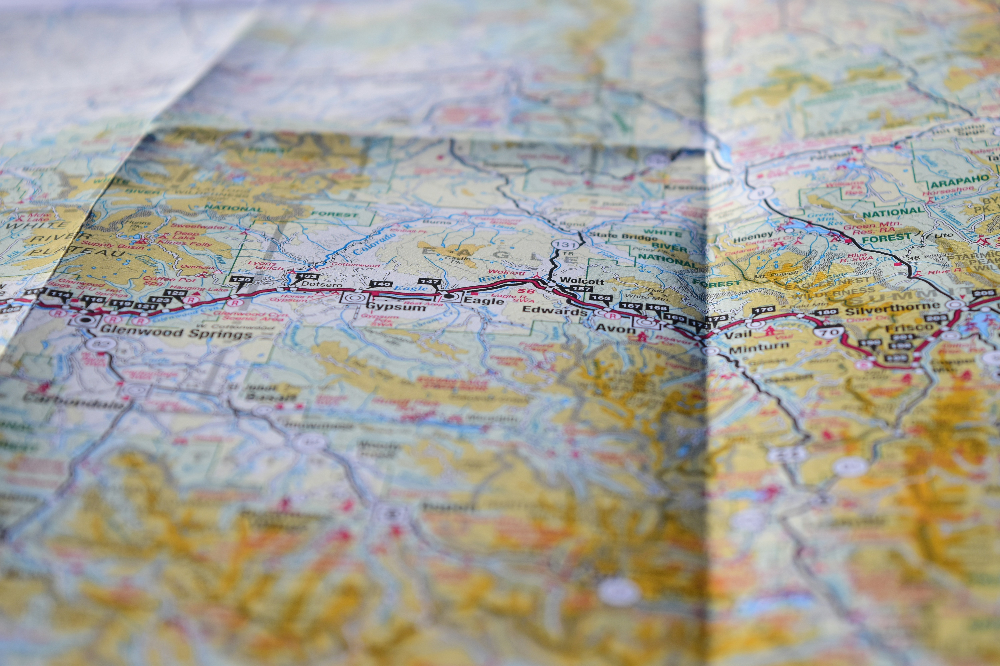

오시는길
배곧건치과의원
오시는길
주소 : 경기도 시흥시 배곧5로 66-7 2층
배곧성당 옆 더벤티 2층
배곧누리초등학교 대각선
주차장
건물 지하주차장(무료)
제1공영주차장(유료)
최초 30분 300원
30분 이후 10분마다 100원(2시간 이내)
2시간 이후 10분마다 200원
1일 최대 요금 3000원
버스
60, 92-2,3500번 배곧센텀베이 정류장
70번 배곧누리초, 중흥s클래스 주차장
TEL : 031-8042-7528